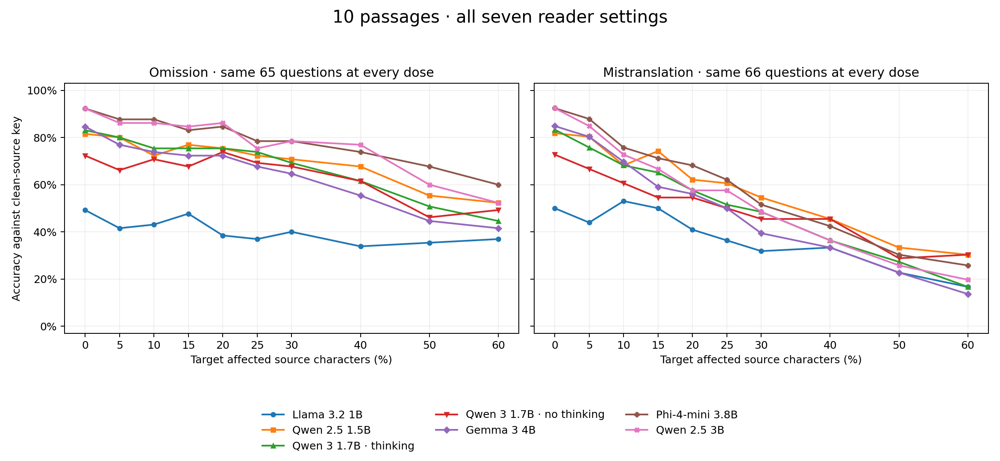
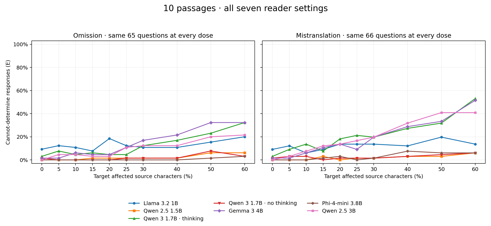
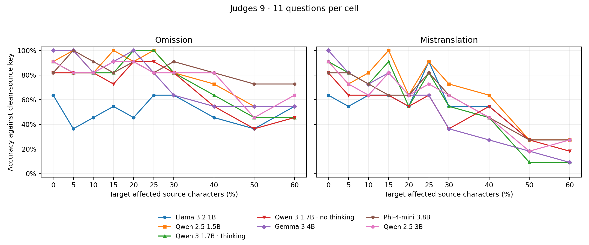
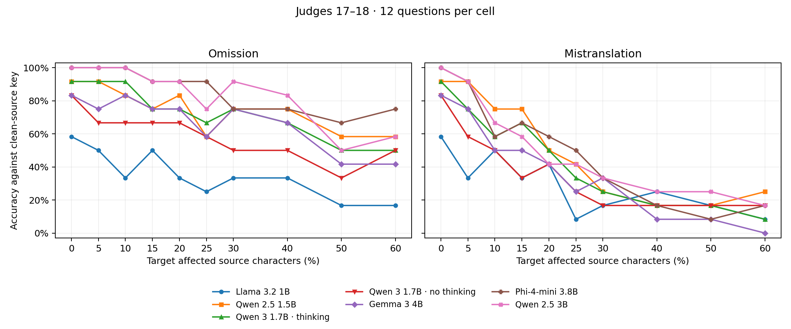
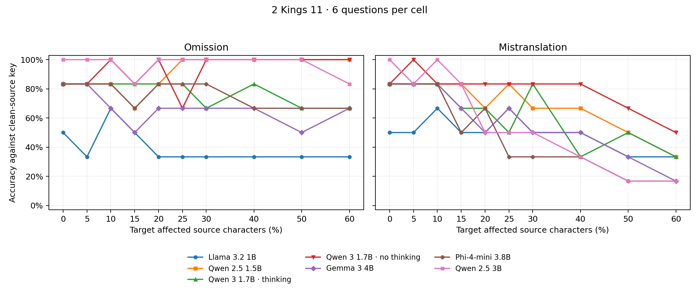
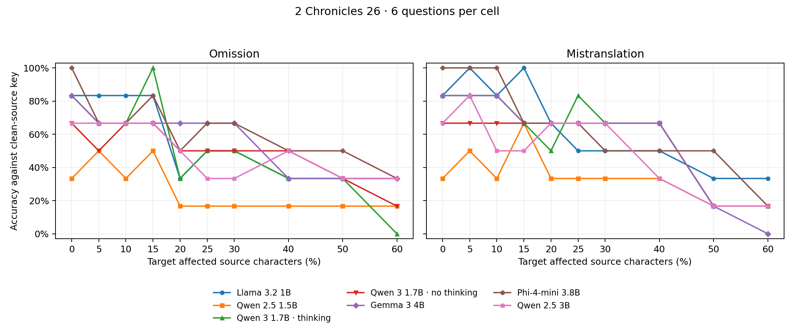
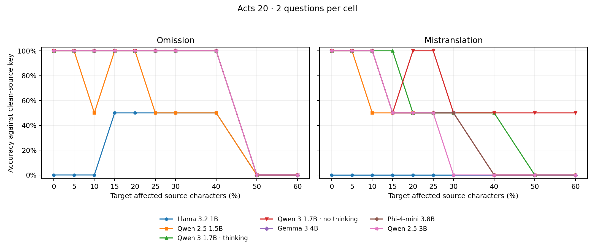

2 Kings 6–7 · 10 questions · 1,330 responses
Full report: all choices, answers, thinking traces and response checks

10 passages · 66 distinct questions · 7 reader settings · 8,764 recorded responses.
Accuracy uses the clean-source key. E means 无法判断. Matching the key after its evidence is deleted does not establish comprehension of the displayed passage. These are descriptive results, with one response per item and setting; lines connect observations and are not fitted curves. Models and doses reuse questions, so the response total is not an independent sample size.
Scalable accuracy figure · Scalable E-rate figure


30–60% versions are nested; 5–25% versions need not be. Doses count affected clean Chinese content characters, with ±2 percentage-point tolerance. The original reader-specific prompts and parsers, model weights, temperature 0 and 2,500-token output cap are retained. Thinking counts toward that cap. Unmatched nonempty primary-reader answers use the original GPT-4.1-mini choice mapper; no passage or answer key is sent to that mapper.
Percentages below average the seven settings, using a constant question set within each family. Clean baselines may differ between families if a held version removes a question from one comparison.
| Passage | Omission questions | Clean → 30% → 60% | Mistranslation questions | Clean → 30% → 60% |
|---|---|---|---|---|
| Judges 9 | 11 | 85.7% → 77.9% → 55.8% | 11 | 85.7% → 54.5% → 20.8% |
| Judges 17–18 | 12 | 86.9% → 67.9% → 50.0% | 12 | 86.9% → 26.2% → 13.1% |
| 2 Kings 6–7 | 10 | 67.1% → 64.3% → 75.7% | 10 | 67.1% → 42.9% → 21.4% |
| 1 Kings 13 | 8 | 73.2% → 69.6% → 41.1% | 8 | 73.2% → 55.4% → 30.4% |
| 2 Kings 11 | 6 | 81.0% → 78.6% → 73.8% | 6 | 81.0% → 59.5% → 28.6% |
| 2 Samuel 21 | 2 | 71.4% → 57.1% → 7.1% | 2 | 71.4% → 42.9% → 28.6% |
| 2 Chronicles 26 | 6 | 73.8% → 47.6% → 23.8% | 6 | 73.8% → 57.1% → 16.7% |
| Acts 19 | 3 | 76.2% → 38.1% → 52.4% | 3 | 76.2% → 57.1% → 23.8% |
| Acts 20 | 2 | 85.7% → 85.7% → 0.0% | 2 | 85.7% → 35.7% → 7.1% |
| Acts 23 | 5 | 88.6% → 65.7% → 14.3% | 6 | 90.5% → 33.3% → 31.0% |
Full report: all choices, answers, thinking traces and response checks

Full report: all choices, answers, thinking traces and response checks

Full report: all choices, answers, thinking traces and response checks
Full report: all choices, answers, thinking traces and response checks

Full report: all choices, answers, thinking traces and response checks

Full report: all choices, answers, thinking traces and response checks

Full report: all choices, answers, thinking traces and response checks

Full report: all choices, answers, thinking traces and response checks

Full report: all choices, answers, thinking traces and response checks

Full report: all choices, answers, thinking traces and response checks

This individual report uses all available items and shows its varying cell denominators.
| Passage | Mapped choices | Mapped E | Invalid | Token limit reached |
|---|---|---|---|---|
| Judges 9 | 68 | 31 | 1 | 2 |
| Judges 17–18 | 86 | 43 | 1 | 1 |
| 2 Kings 6–7 | 60 | 42 | 0 | 0 |
| 1 Kings 13 | 21 | 13 | 1 | 1 |
| 2 Kings 11 | 31 | 0 | 3 | 3 |
| 2 Samuel 21 | 3 | 2 | 0 | 0 |
| 2 Chronicles 26 | 15 | 6 | 0 | 0 |
| Acts 19 | 2 | 0 | 0 | 0 |
| Acts 20 | 2 | 2 | 0 | 0 |
| Acts 23 | 49 | 34 | 3 | 3 |